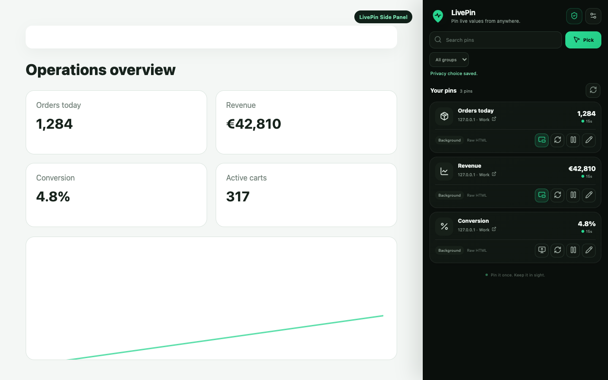

Click a number, price, score, count, percentage or status directly on the page instead of configuring a full-page monitor.
Website value tracker for Chrome
Track the values that change.
Keep them pinned.
LivePin turns changing website data — numbers, prices, scores, counts, percentages and stats — into persistent browser pins you can check without reopening the source page.
Local-firstNo LivePin accountPer-pin floating widgetsOptional alerts

One job, done well
A live website data tracker that stays in your browser.
Select the exact value you care about. LivePin remembers how to read it, refreshes it when possible, keeps local history and can alert you when your rule matches.
Keep selected values in the LivePin side panel or enable a draggable floating pin for the values you want visible across pages.
Use local history and optional visual, sound, Chrome notification or webhook alert rules for meaningful value changes.
How it works
From webpage to persistent pin in three steps.
Open the source page
Use LivePin on a normal webpage and start the picker. Site access is requested when you choose to track something there.
Select the changing value
Click the exact DOM value you want, give it a clear name and choose a refresh interval.
Keep watching from anywhere
LivePin refreshes the pin using available browser-side sources and shows history, status and alerts in one place.
Search intent, real use
Built for the values people repeatedly check by hand.
LivePin is useful when the page matters less than one changing value on it.
Website value trackerTrack specific numbers, prices, counts, percentages and compact statuses instead of monitoring an entire page.
Live data Chrome extensionKeep website data in a persistent Chrome side panel or floating pin while you work in other tabs.
Website change alertsUse conditions such as equals, changes, above or below to react to the value itself.
Privacy by architecture
Your pins are local-first.
LivePin does not require an account or a LivePin backend. Tracker configuration is stored in Chrome extension storage and history stays in extension IndexedDB by default. Chrome Sync and webhooks are opt-in.
FAQ
LivePin in plain language.
What is LivePin?
A Chrome extension for selecting one changing value from a website and keeping it available as a persistent browser pin.
What can I track?
LivePin is designed for compact changing values such as numbers, prices, scores, counts, percentages, statuses and stats.
Does it work on logged-in websites?
It can work on many authenticated pages using the browser session and permissions you grant. Some sites can still block or complicate background refresh through CAPTCHA, CSP or application-specific behavior.
Is LivePin a full website change detector?
No. LivePin focuses on the exact value you choose. That makes it different from screenshot- or page-diff monitors that watch entire areas or documents.
Stop reopening the same page
Pin the value. Keep browsing.
Install LivePin from the Chrome Web Store and turn the next value you repeatedly check into a browser pin.